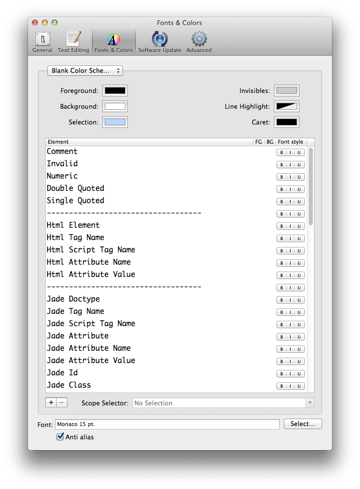

Note: Need to use Textmate to edit color schemes.
Create a Custom Color Scheme
Move the Blank.tmTheme file into ~/Library/Application Support/TextMate/Themes/. Open Textmate and go to Preferences > Fonts & Colors panel, select Blank Color Scheme from the theme list. Then you can start to edit. When you have finished editing, close the Preferences panel to save the file.
If you want to distribute your color scheme, don't forget to change the author's name and uuid.
Scope Selector Reference
The following scope selectors may help you to modify an existing color scheme. Choose a scope selector and add it as a new entry to the color scheme from Textmate Fonts & Colors panel.
Read more information about scope selector
Use this method to gain scope selector in Sublime Text 2
General
| Element | Scope Selector |
|---|---|
| Comment | comment |
| Invalid | invalid.illegal |
| Numeric | constant.numeric |
| Double Quoted | string.quoted.double |
| Single Quoted | string.quoted.single |
Html
| Element | Scope Selector |
|---|---|
| Html Element | text.html.basic meta.tag |
| Html Tag Name | text.html.basic entity.name.tag |
| Html Script Tag Name | text.html.basic entity.name.tag.script |
| Html Attribute Name | text.html.basic entity.other.attribute-name |
| Html Attribute Value | text.html.basic string.quoted.double.html |
Jade
Syntax package: Jade.tmbundle
| Element | Scope Selector |
|---|---|
| Jade Doctype | keyword.other.doctype.jade |
| Jade Tag Name | entity.name.tag.jade |
| Jade Script Tag Name | entity.name.tag.script.jade |
| Jade Attribute | meta.tag.attribute.jade |
| Jade Attribute Name | entity.other.attribute-name.jade |
| Jade Attribute Value | string.quoted.double.jade |
| Jade Id | meta.tag.attribute.id.jade |
| Jade Class | meta.tag.attribute.class.jade |
Css
| Element | Scope Selector |
|---|---|
| Css Selector - Tag | entity.name.tag.css |
| Css Selector - Id | source.css entity.other.attribute-name.id |
| Css Selector - Class | entity.other.attribute-name.class |
| Css Pseudo Class | entity.other.attribute-name.pseudo-element, entity.other.attribute-name.pseudo-class |
| Css Property Name | support.type.property-name |
| Css Property Value | support.constant.property-value |
| Css Color | constant.other.color.rgb-value.css |
| Css Numeric | Same as General |
| Css Unit | keyword.other.unit.css |
| Css Font Name | support.constant.font-name |
| Css Curly Brackets | punctuation.section.property-list.css |
| Css Round Brackets | punctuation.section.function.css |
| Css Double Quoted | Same as General |
| Css Single Quoted | Same as General |
| Css url() / rgba() / hsla() | support.function |
| Css Parameter | variable.parameter.misc.css |
Less
Syntax package: LESS syntax package for Sublime Text 2 or less.tmbundle (for Textmate)
| Element | Scope Selector |
|---|---|
| Less Selector - Tag | source.css.less keyword.control.html.elements |
| Less Selector - Id | Same as Css |
| Less Selector - Class | Same as Css |
| Less Pseudo Class | Same as Css |
| Less Property Name | Same as Css |
| Less Property Value | Same as Css |
| Less Color | source.css.less constant.other.rgb-value.css |
| Less Numeric | Same as General |
| Less Unit | source.css.less keyword.unit.css |
| Less Font Name | Same as Css |
| Less Curly Brackets | source.css.less meta.brace.curly.js |
| Less Round Brackets | source.css.less meta.brace.round.js |
| Less Double Quoted | Same as General |
| Less Single Quoted | Same as General |
| Less Operator | keyword.operator.less |
| Less Variable / At Rule | variable.other.less |
| Less url() / rgba() / hsla() / Other | source.css.less support.function |
Sass
Syntax package: Sass for TextMate/Sublime Text 2
| Element | Scope Selector |
|---|---|
| Sass Selector - Tag | source.sass keyword.control.untitled |
| Sass Selector - Id | source.sass entity.other.attribute-name.id |
| Sass Selector - Class | Same as Css |
| Sass Pseudo Class | source.sass entity.other.attribute-name.tag.pseudo-class |
| Sass Property Name | Same as Css |
| Sass Property Value | Same as Css |
| Sass Color | constant.other.rgb-value.sass |
| Sass Numeric | Same as General |
| Sass Unit | constant.other.unit.sass |
| Sass Font Name | Same as Css |
| Sass Curly Brackets | Null |
| Sass Round Brackets | Null |
| Sass Double Quoted | Same as General |
| Sass Single Quoted | Null |
| Sass url() | source.sass variable.parameter.url |
| Sass rgba() / hsla() | Null |
| Sass Variable | variable.parameter.sass |
| Sass At Rule | keyword.control.at-rule.sass |
Javascript
I only know a tiny bit of javascript, so this part may not exact. Please feel free to fork this repo and make it better :)
| Element | Scope Selector |
|---|---|
| Javascript Function | entity.name.function.js, source.js support.function |
| Javascript Constant | source.js constant |
| Javascript Variable | source.js variable |
| Javascript Operator | keyword.operator.js |
| Javescript Keyword | source.js keyword |
| Javascript Support | source.js support |
| Javascript Type | source.js storage.type, source.js entity.name.type |
| Javascript Numeric | Same as General |
| Javascript Curly Brackets | source.js meta.brace.curly.js |
| Javascript Round Brackets | source.js meta.brace.round.js |
| Javascript Double Quoted | Same as General |
| Javascript Single Quoted | Same as General |
Made with Blank Color Scheme
I've tried to make a color scheme, but it's really awful. If you end up using it, I’d love to see the results. Just fork & pull request or tweet me your link to display your color scheme here.